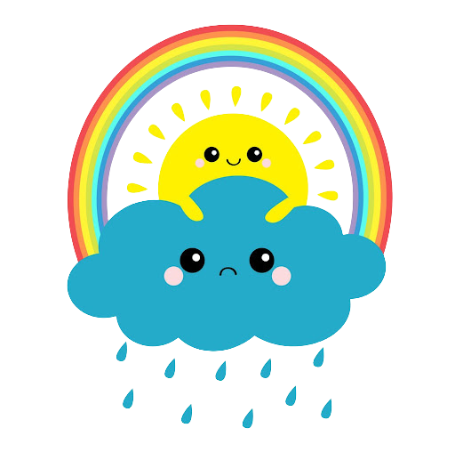

Min sommarberättelse.

Det absolut tråkigaste jag har gjort i sommar var att kolla på Youtube-shorts i 5 timmar men jag har också gjort en rolig grej, så som att bada.
Jag badade ungefär 8 gånger nu i sommarn och det kändes väldigt bra och lugnande. Det godaste jag åt i år var nog glass och det kändes som svalkande vind
på en het sommardag.
Jag har inte kollat på några tv-serier under sommarn.
Vid ett tillfälle under sommarn åkte jag till Anttis, där var det väldigt varmt och rätt så mycket mygg under några dagar.
För att kort sammanfatta min sommar med tre ord hade jag beskrivit den som; Lång, Varm och Trevlig.
Det var en helt okej sommar men jag har längtat lite grann till att få börja skolan igen och jag tror att detta år på NTI kommer att bli jättebra.